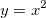

Please see the newbook X-Function.
Creates a dataset or worksheet of name with the number of rows numRows. NumRows should be the maximum number of rows you anticipate requiring. Each dataset is associated with values and attributes. To change the values and attributes of a dataset, use the set command. To view the worksheet for a dataset, use the edit dataset command.
|
Please see the newbook X-Function. |
creat name [option] [numRows]
Syntax: create name -c numRows
Create a Y dataset and associated X dataset containing all zero values. To plot this data you must specify values for both X and Y. The Y dataset is called name. The X dataset is called name_A. Note:If name contains an underscore " _ ", it and subsequent characters are ignored when naming the X dataset. So, if name is data1_test, X is called data1_A.
Syntax: create name -cd numRows
Like the -c option but -cd causes destruction of the dataset when all existing plots of the dataset are destroyed. This will apply to child window destruction, to OriginC's Destroy() method of the page, and when using the LabTalk win -c command.
create test_b -cd 10; test_a=data(1,1000); test_b=normal(1000); win -t plot; layer -i test_b;
Loose dataset destruction can be disabled by setting the value of @DLDG to 0:
Syntax: create name -d numRows
Create a dataset and an associated X dataset named name_A. Plot the datasets into the active graph layer as a scatter data plot.
Syntax: create name -dd numRows
Like the -d option but -dd causes destruction of the dataset when all existing plots of the dataset are destroyed. This will apply to child window destruction, to OriginC's Destroy() method of the page, and when using the LabTalk win -c command.
Loose dataset destruction can be disabled by setting the value of @DLDG to 0:
Syntax: create name -f npts formula
Create a function. While you can use this notation to create a function, a simpler method is: myFunc(x)=3+3*sin(x);
For example, you can run the following script to create a function called myquad using the formula , generate 200 data points, then plot the function as a line.
create myquad -f 200 "x^2"; plotxy myquad 200; //Rescale the X and Y axis sec -p 1; layer -a;
Note: the npts takes input integer value no less than 100 as the dataset size.
Syntax: create name -fp npts formula min max
npts is the number of points of the loose dataset, formula must use the variable t as the independent, min and max are the minimum and maximum of the loose dataset respectively. After creating the loose dataset, the X-Function plotxy can be used to make 2D parametric function plot.
create mydata -fp 50 "t*cos(t)" 0 "2*pi"; plotxy mydata 201;
Syntax: create name -fp2 npts formula min max npts2 min2 max2
npts is the number of points of the first dimension (number of columns, independent u), formula must use the variables u and v as the independents, min and max are the minimum and maximum of the first dimension values respectively. npts2, min2 and max2 will be the similar meanings to the first dimension for the second dimension (number of rows, independent v). After creating the 2D loose dataset, the X-Function plotm can be used to make 3D parametric function plot.
create myz -fp2 20 "(v*v*cos(u)*cos(u)+v*v*sin(u)*sin(u))/2" 0 "2*pi" 50 0 5; plotm myz 103;
Syntax: create name -m numRows
Create a dataset associated with a double-headed vertical arrow as the data point symbol type. Otherwise, same as -c above.
Syntax: create name -mfp ZData XData YData "XVar,YVar"
A matrixbook with the specified name (if exists, enumerated) will be created, with 3 matrix objects in the matrix sheet. 3 matrix objects will be with the data from the specified 2D loose datasets, ZData, XData, and YData respectively. The 2D loose dataset can be created by using create -fp2 command. XVar and YVar will be used as the two independent variable name. The X-Function plotm can be used to make 3D parametric function plot from the created matrices.
create myx -fp2 20 v*cos(u) 0 6.28 50 0 5; create myy -fp2 20 v*sin(u) 0 6.28 50 0 5; create myz -fp2 20 (v*v*cos(u)*cos(u)+v*v*sin(u)*sin(u))/2 0 6.28 50 0 5; create Func -mfp myz myx myy "u,v"; plotm im:=[Func]1!1 plot:=103 x:=2 y:=3;
Syntax: create name -mfph ZData XData YData "XVar,YVar"
A matrixbook with the specified name (if exists, enumerated) will be created as a hidden window. The matrixsheet will contain with 3 matrix objects, and those objects will contain the data from the specified 2D loose datasets, ZData, XData, and YData, respectively. The 2D loose datasets can be created by using the create -fp2 command. XVar and YVar will be used as the two independent variable names. The X-Function plotm can be used to make 3D parametric function plots from the created matrices.
For an example, see plot 3D box and sphere using plotm.
Syntax: create name -n numRows
Create an empty Y dataset with no associated X values. When plotting, assume an initial X value of 1 and an increment of 1.Use the set command to change these X attributes. To view the dataset, use the edit datasetname command.
Syntax: create name -nd numRows
Like the -n option but -nd causes destruction of the dataset when all existing plots of the dataset are destroyed. This will apply to child window destruction, to OriginC's Destroy() method of the page, and when using the LabTalk win -c command.
Loose dataset destruction can be disabled by setting the value of @DLDG to 0.
Minimum Version: 9.1 SR0
Syntax: create name -nrs extract_rule [range_string, designation, scope_range_string]
This command creates a virtual dataset by specifying the name of a range. The values of the virtual dataset are determined by the extract rules listed below:
| Value | Meaning |
|---|---|
| 0 | Concatenate by column. Combine the values in a selected block of cells through column direction. |
| 1 | Concatenate by row. Combine the values in a selected block of cells through row direction. |
| 2 | Mean of row. Use the mean value of each row in selection. |
| 3 | SD of row. Use the standard deviation of each row in selection. |
| 4 | Even rows. Use the values in the even rows of selection. |
| 5 | Odd rows. Use the values in the odd rows of selection. |
Optionally, you can specify the range_string to refer to a selected range. If not specified, the current selection will be used. You may also specify scope_range_string to refer a worksheet to be used. If not specified, the worksheet in the first range of poly range will be used.
The following example creates the first row in Book1 Sheet1 as myvsx and second row as myvsy, and use these two dataset for X and Y, respectively, for plotting:
create myvsx -nrs 1 "[Book1]Sheet1![1]:[1]"; create myvsy -nrs 1 "[Book1]Sheet1![2]:[2]"; plotxy (myvsx, myvsy);
Another example is to create myvsbox with the block of cells from cell at column 1 row 2 to the cell at column 3 row 4:
create myvsbox -nrs 1 "[Book1]Sheet1!1[2]:3[4]"; win -t p box; layer -i206 myvsbox;
Syntax: create name -s numRows
Create a string dataset.
See Also: dataset -a
Syntax: create name -t numRows
Create a dataset that is not associated with a worksheet and that cannot be plotted.
Syntax: create name -w numRows [colName(s)]
You can specify column names after numRows. If you specify column names, you must specify at least two. Use the Window command to open a worksheet created from a specific template.
Syntax: create name -wd numRows [colName(s)]
Create the datasets but not the worksheet. Format datasets as Text & Numeric.
Syntax: create name -wdn numRows [colNume(s)]
Create the datasets but not the worksheet. Format datasets as Numeric.
The following example create some loose datasets and use X-Function to compute histogram from col(2) of active sheet and make a plot.
create histgm -wdn 10 bincenter counts; freqcounts irng:=col(2) rd:=tmptr; histgm_bincenter=tmptr.FreqCount.BinCenter; histgm_counts =tmptr.FreqCount.Counts; plotxy (histgm_bincenter, histgm_counts) p:=203;
Syntax: create name -wh numRows[colNume(s)]
Create a hidden worksheet. Format datasets as Text & Numeric. To view the worksheet, use the edit datasetname command.
Syntax: create name -whn numRows[colName(s)]
Create a hidden worksheet with the datasets set to Numeric. To view the worksheet, use the edit datasetname command.
create tmpbook -whn 10 aa bb;
Syntax: create name -wn numRows[colName(s)]
Create a worksheet with the datasets set to Numeric.
Syntax: create name -x numRows
Create a dataset associated with a vertical line as the data point symbol type. Otherwise, same as -c above.
Syntax: create name -xd numRows
Like the -x option but -xd causes destruction of the dataset when all existing plots of the dataset are destroyed. This will apply to child window destruction, to OriginC's Destroy() method of the page, and when using the LabTalk win -c command.
Loose dataset destruction can be disabled by setting the value of @DLDGto 0:
Create X and Y datasets of 100 points in a hidden workbook. Workbook name and Y column name are specified and X column name defaults to A:
// Workbook = '''Exp1''', Y column = '''mVolts''' create Exp1_mVolts -c 100;
Create various worksheets.
// Visible, four column worksheet named Misc create Misc -w 11 Alpha Beta Gamma Delta; // Hidden (even from Project Explorer), //two column worksheet named Hidden1 create Hidden1 -wd 13 A1 A2; // Hidden (visible in Project Explorer), //three column worksheet named Hidden2 create Hidden2 -wh 23 AAA A2Z ZZZ; // Visible, three column (Numeric type) worksheet named Numbers create Numbers -wn 31 PY1 PY2 PY3;
This script creates a string dataset and demonstrates writing and reading from the dataset.
create mystrings -s 10; MyStrings[1]$=Hello; MyStrings[10]$=Goodbye; for(ii = 1;ii <= 10;ii++) { %A=MyStrings[ii]$; type $(ii) \x3D %A; };
Create XY datasets that add themselves to active graph layer. A better approach is also shown.
// Older method requires queueing delay win -t plot 201 Scatter; // Create a graph create Plot_Me -d 50; // Create the worksheet Plot_A = data(1,50); // Fill the X column Plot_Me = uniform(50); // Fill the Y column queue { set %C -e 50; layer -a; } doc -uw; // Simpler to use hidden worksheet win -t plot 201 Scatter; create Plot -wh 50; Plot_A = data(1,50); Plot_B = uniform(50); layer -i Plot_B; layer -a;
Create Y data and plot against row index.
create Singular -n 7; singular = {1,6,2,5,3,0,7}; win -t plot linesymb; layer -i singular; layer -a;
Create a temporary dataset with no plot designation.
create Lookup -t 7; Lookup = {-1,1,1,1,1,1,-1}; loop(ii,1,7) { if(lookup[ii]==1) type Today is a work day.; else type Take the day off.; }